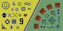
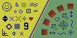

1. 序論
~CSS~Level 2 までは、 `background-image$p ~propに画像として与え得る値は、単独の~URL値に限られていた。 この~moduleは、 2D 画像を表現する，追加の仕方を導入する — 例えば， 勾配 として。 ◎ In CSS Levels 1 and 2, image values, such as those used in the background-image property, could only be given by a single URL value. This module introduces additional ways of representing 2D images, for example as a gradient.
この~moduleは、 ~raster画像を操作するための, および［ 各種~CSS~layout~algoにより決定される~box ］の中の［ 画像などの置換~要素 ］の［ ~sizing や 位置決め ］のための，いくつかの~propも定義する。 それはまた、画像や類似する他の置換~要素のための汎用的な仕方による ~CSSの~sizing~algoも定義する。 ◎ This module also defines several properties for manipulating raster images and for sizing or positioning replaced elements such as images within the box determined by the CSS layout algorithms. It also defines in a generic way CSS’s sizing algorithm for images and other similar replaced elements.
この節のここまでは規範的でない。 ◎ This subsection (above) is not normative.
1.1. ~module間の相互作用
この~moduleは、 `css-values-3$r に定義される `image^t 値~型を定義して拡張する。 加えて，［ CSS1 ／ CSS2 ］による［ `background-image$p, `list-style-image$p ］の定義における `url$t 型を置換し、［ `content$p ~propの値における `url$t ］に対する代替として `image^t 型を追加する。 CSS2.1 を超える各種~CSS仕様は、 2D 画像が期待される所では， `url$t に代えて `image^t 記法を利用するものと想定されている。 （例： `CSS3BG$r を見よ。） ◎ This module defines and extends the <image> value type defined in [css-values-3]. Furthermore it replaces the <url> type in the background-image and list-style-image definitions in CSS1 and CSS2 and adds <image> as an alternative to <url> in the content property’s value. It is presumed that CSS specifications beyond CSS2.1 will use the <image> notation in place of <url> where 2D images are expected. (See e.g. [CSS3BG].)
この~moduleに定義される どの~propも， `first-line^pe ／ `first-letter^pe には適用されない。 ◎ None of the properties defined in this module apply to ::first-line and ::first-letter.
1.2. 値
【 この節の内容は CSS 日本語訳 共通ページ に委譲 】
2. 画像~値： `image^t 型
`image$t 値~型は 2D 画像を表し、［ ~url参照 ／ 2 個の画像を組合せる `cross-fade^f 式 ／ 色~勾配 ］をとり得る。 その構文は次で与えられる： ◎ The <image> value type denotes a 2D image. It can be a url reference, a cross-fade expression combining two images, an or a color gradient. Its syntax is:
`image@t
= `url$t
| `cross-fade()$t
| `gradient$t
`image$t は［ `background-image$p, `list-style-image$p, `cursor$p ］ `CSS21$r なども含め，多くの~CSS~propで利用できる（それらの~propの値の中の `url^t 成分を置き換える）。 ◎ An <image> can be used in many CSS properties, including the background-image, list-style-image, cursor properties [CSS21] (where it replaces the <url> component in the property’s value).
`url^t が妥当な画像~形式でない資源を指しているときなど，画像は無効になることもある。 `無効な画像@ は、`内在~寸法$を持たない単色による `transparent$v 画像として描画される。 ◎ In some cases, an image is invalid, such as a <url> pointing to a resource that is not a valid image format. An invalid image is rendered as a solid-color transparent image with no intrinsic dimensions.
2.1. 画像~参照： `url^f 記法
画像を指示する最も単純な仕方は、~URLにより画像~fileを指すことである。 これは、`css-values-3$r にて定義される `url$f 記法で行える。 ◎ The simplest way to indicate an image is to reference an image file by URL. This can be done with the url() notation, defined in [css-values-3].
下の例では， `url$f 構文で背景~画像が指定されている： ◎ In the example below, a background image is specified with url()syntax:
background-image: url(wavy.png);
If the cannot ~URLにある内容を画像として，成功裡に［ ~downloadして構文解析して表示- ］できない場合（すなわち，`全部的に復号可能$でない）、~UAは，それを`無効な画像$として扱わ~MUST。 ◎ If the UA cannot download, parse, or otherwise successfully display the contents at the URL as an image (i.e. if the image is not fully fully decodable) it must be treated as an invalid image.
2.2. 画像を組合せる： `cross-fade^f 記法
~CSSにより 2 個の画像~間の遷移を与えるためには、［ 開始-, 終止- ］画像を組合せた中間的な画像を明示的に指す仕方を要する。 `cross-fade$f 関数が、これを達成する。 それは、組合せられる 2 個の画像, および 組合せの遷移の進行度合いを指示する。 ◎ When transitioning between images, CSS requires a way to explicitly refer to the intermediate image that is a combination of the start and end images. This is accomplished with the cross-fade() function, which indicates the two images to be combined and how far along in the transition the combination is.
注記： 作者は、 `cross-fade$f 関数を，多くの単純な画像~操作にも利用できる — 画像を単色で淡く染めたり，`放射型~勾配$と組合せて，頁~内の特定0の区域を強調するなど。 ◎ Note: Authors can also use the cross-fade() function for many simple image manipulations, such as tinting an image with a solid color or highlighting a particular area of the page by combining an image with a radial gradient.
`cross-fade^f の構文は、次で定義される： ◎ The syntax for cross-fade() is defined as:
`cross-fade@f
= cross-fade( `cf-mixing-image$t , `cf-final-image$t? )
`cf-mixing-image$t
= `percentage$t? && `image$t
`cf-final-image$t
= `image$t | `color$t
この関数は、 2 枚の画像を組合せて生成される画像を表現する。 ◎ The function represents an image generated by combining two images.
`percentage$t は、与えられた 2 枚の画像が混色されたときの， 1 枚目の画像の含有率を表現する。 `percentage$t 値は、 `0%^v 〜 `100%^v の範囲に入ら~MUST — 他の値は無効である。 省略された場合の既定の値は、 `50%^v になる。 ◎ The <percentage> represents how much of the first image is retained when it is blended with the second image. The <percentage> must be between 0% and 100% inclusive; any other value is invalid. If omitted, it defaults to the value 50%.
2 個目の引数が `color$t である場合、［ 1 枚目の画像と同じ`内在~寸法$を伴う単色~画像 ］を表現する。 省略された場合の既定の色は、 `transparent$v になる。 ◎ If the last argument is a <color>, it represents a solid-color image with the same intrinsic dimensions as the first image. If omitted, it defaults to the color transparent.
より精確には： ［ 画像 %A, %B，および 百分率 %p （ 0% 〜 100% ） ］を引数にとる cross-fade(%p %A, %B) が与えられたとき、まず，関数が表現する結果の画像の~sizeは次で与えられる：
横幅 ＝ ( %A の横幅 ) × %p + ( %B の横幅 ) × ( 1 − %p )
縦幅 ＝ ( %A の縦幅 ) × %p + ( %B の縦幅 ) × ( 1 − %p )
画像の内容は、まず， %A, %B を この画像~sizeに拡縮した上で，次の式を適用することにより構築され~MUST：
dissolve( %A, %p ) plus dissolve( %B, 1 − %p )
ここで、 "dissolve()" 関数と "plus" 結合演算子は `PORTERDUFF$r にて定義される。 【dissolve, plus】
◎ More precisely, given cross-fade(p A, B), where A and B are images and p is a percentage between 0% and 100%, the function represents an image with width equal to widthA × p + widthB × (1-p) and height equal to heightA × p + heightB × (1-p). The contents of the image must be constructed by first scaling A and B to the size of the generated image, then applying dissolve(A,p) plus dissolve(B,1-p). The "dissolve()" function and "plus" compositing operator are defined in the literature by Porter-Duff. [PORTERDUFF]3. 勾配
勾配とは、ある色から別の色へ滑らかに~fadeする画像である。 これらは、背景~画像, ~buttonその他 多くのものに淡い陰影を施すために，共通的に利用される。 この節に述べる勾配~記法により、作者は，簡素な構文でその種の画像を指定でき、~UAによる頁~描画の際に自動的に生成される。 その構文は、次で与えられる： ◎ A gradient is an image that smoothly fades from one color to another. These are commonly used for subtle shading in background images, buttons, and many other things. The gradient notations described in this section allow an author to specify such an image in a terse syntax, so that the UA can generate the image automatically when rendering the page. The syntax of a <gradient> is:
`gradient@t
= `linear-gradient()$t
| `repeating-linear-gradient()$t
| `radial-gradient()$t
| `repeating-radial-gradient()$t
他の `image$t 型と同様に、この仕様にて定義される勾配は，画像を受容するどの~propでも利用できる。 例えば: ◎ As with the other <image> types defined in this specification, gradients can be used in any property that accepts images. For example:
background: linear-gradient(white, gray); list-style-image: radial-gradient( circle, #006, #00a 90%, #0000af 100%, white 100% );
勾配は、`勾配~box@ と呼ばれる，`実obj~size$の寸法による~boxの中に描かれる。 しかしながら、勾配~自身は`内在~寸法$を持たない。 ◎ A gradient is drawn into a box with the dimensions of the concrete object size, referred to as the gradient box. However, the gradient itself has no intrinsic dimensions.
例えば，勾配を背景として利用する場合、既定では，勾配は［ 要素の~padding~boxに~sizeされた`勾配~box$ ］の中に描かれることになる。 `background-size$p が， `100px 200px^v のような数値的な値にされている場合、`勾配~box$は，幅 100px, 高さ 200px になる。 同様に， `list-style-image$p として利用される勾配に対しては、~boxは，その~propの`既定の~obj~size$である 1em の正方形になる。 ◎ For example, if you use a gradient as a background, by default the gradient will draw into a gradient box the size of the element’s padding box. If background-size is explicitly set to a value such as 100px 200px, then the gradient box will be 100px wide and 200px tall. Similarly, for a gradient used as a list-style-image, the box would be a 1em square, which is the default object size for that property.
勾配は、 `勾配~線@ （その形状は、勾配の型に依存する — 技術的には、直線, 射線, 渦巻き線になり得る）の `始点@ と `終点@ を定義した上で、この線~上のいくつかの点に色を指定することにより，指定される。 これらの色は、まず，線~上の他の部分を埋める様に，滑らかに混色される。 `勾配~線$の色を利用して勾配 全体の色を実際に生産する方法は、勾配の各~型ごとに定義される。 ◎ Gradients are specified by defining the starting point and ending point of a gradient line (which, depending on the type of gradient, may be technically a line, or a ray, or a spiral), and then specifying colors at points along this line. The colors are smoothly blended to fill in the rest of the line, and then each type of gradient defines how to use the color of the gradient line to produce the actual gradient.
3.1. 線型~勾配： `linear-gradient^f 記法
`線型~勾配$は、まっすぐな`勾配~線$を指定し，その線に沿って置かれるいくつかの色（`色停$）により作成される。 画像は、無限~canvasを作成した上で、`勾配~線$の各点に対し，その点から出る垂線を その点の色で塗ることにより、構築される。 これは、各~色から次の色へ, 指定された方向へ進行する，滑らかな~fadeを生産する。 ◎ A linear gradient is created by specifying a straight gradient line, and then several colors placed along that line. The image is constructed by creating an infinite canvas and painting it with lines perpendicular to the gradient line, with the color of the painted line being the color of the gradient line where the two intersect. This produces a smooth fade from each color to the next, progressing in the specified direction.
3.1.1. `linear-gradient^f 構文
`線型~勾配$の構文は、次で与えられる： ◎ The linear gradient syntax is:
`linear-gradient@f
= linear-gradient(
[ `angle$t | `to^v `side-or-corner$t ]? ,
`color-stop-list$t
)
`side-or-corner@t
= [`left^v | `right^v] || [`top^v | `bottom^v]
関数の 1 個目の引数は`勾配~線$を指定する。 それは、勾配の方向を与え，`色停$を位置させる方法 【すなわち，基準となる始点, 終点】 を決定する。 この引数が省略された場合の既定は， `to bottom^v になる。 ◎ The first argument to the function specifies the gradient line, which gives the gradient a direction and determines how color-stops are positioned. It may be omitted; if so, it defaults to to bottom.
`勾配~線$の方向を指定するには、2 種類の仕方がある： ◎ The gradient line’s direction may be specified in two ways:
- 角度（ `angle$t ）を利用◎using angles
- この引数の目的においては、 `0deg^v は上方を指し，正の角度は時計回りの回転を表現する。 よって， `90deg^v は右方を指す。 ◎ For the purpose of this argument, 0deg points upward, and positive angles represent clockwise rotation, so 90deg point toward the right.
- `angle$t が 0 の場合、単位~識別子は省略されてよい。 ◎ The unit identifier may be omitted if the <angle> is zero.
- 各種~keywordを利用◎using keywords
- 引数が `to top^v ／ `to right^v ／ `to bottom^v ／ `to left^v の場合、`勾配~線$の角度は，順に `0deg^v ／ `90deg^v ／ `180deg^v ／ `270deg^v になる。 ◎ If the argument is to top, to right, to bottom, or to left, the angle of the gradient line is 0deg, 90deg, 180deg, or 270deg, respectively.
- `to top left^v など，引数が~boxの隅を指定する場合の`勾配~線$は、~boxの中心から その隅と同じ象限へ伸びつつ, `勾配~box$における［ その隅の隣の 2 隅 ］を通る対角~線に垂直になるように，傾けられ~MUST。 これにより、 50% の所に~~位置する`色停$から出る垂線は、この対角~線に一致するようになる（下の例を見よ）。 ◎ If the argument instead specifies a corner of the box such as to top left, the gradient line must be angled such that it points into the same quadrant as the specified corner, and is perpendicular to a line intersecting the two neighboring corners of the gradient box. This causes a color-stop at 50% to intersect the two neighboring corners (see example).
`勾配~線$の`始点$, `終点$は、次で与えられる： `勾配~box$の中心から，指定された角度の方向に線を延伸する。 `終点$は、［ その角度と同じ象限に~~位置する隅 ］から，勾配~線に垂線を下ろした所の交点になる。 `始点$は、方向を逆にした下で，同様に決定される。 ◎ Starting from the center of the gradient box, extend a line at the specified angle in both directions. The ending point is the point on the gradient line where a line drawn perpendicular to the gradient line would intersect the corner of the gradient box in the specified direction. The starting point is determined identically, but in the opposite direction.
注記： この~moduleの次~levelでは、勾配の方向を，現在の［ `~text方向$と`書字mode$ ］に相対的に定義する能を提供するものと予期されている。 ◎ Note: It is expected that the next level of this module will provide the ability to define the gradient’s direction relative to the current text direction and writing-mode.
上の規則から`勾配~線$を視覚的に計算する方法を次に図示する：
これは、 `background^p: `linear-gradient(45deg, white, black)^v; にされた要素で生産される実際の勾配における，`勾配~線$の`始点$と`終点$を示している。 ◎ This example illustrates visually how to calculate the gradient line from the rules above. This shows the starting and ending point of the gradient line, long with the actual gradient, produced by an element with background: linear-gradient(45deg, white, black);.
［ `始点$／`終点$ ］は，~boxの外側にありつつ、それらが，［ 勾配が ちょうど［ 左下／右上 ］隅の所で純粋な［ 白色／黒色 ］になる ］ように精確に位置されている様子に注目。 これは意図的にそのようにされており、`線型~勾配$に対しては，常に成立することになる。 ◎ Notice how, though the starting point and ending point are outside of the box, they’re positioned precisely right so that the gradient is pure white exactly at the corner, and pure black exactly at the opposite corner. That’s intentional, and will always be true for linear gradients.
勾配~線の`始点$から`終点$までの長さは，次の様に計算される：
- %A ＝ 勾配~線の方向を定義する角度 — 0 度が上方を指し, 正の角度が時計回りの回転を表現する。 ◎ A the angle (in any quadrant) defining the gradient line’s direction such that 0 degrees points upwards and positive angles represent clockwise rotation,
- %W ＝ 勾配~boxの横幅 ◎ W the width of the gradient box,
- %H ＝ 勾配~boxの縦幅 ◎ H the height of the gradient box,
とするとき、長さは： ◎ The length of the gradient line (between the starting point and ending point) is:
abs( %W × sin( %A )) + abs( %H × cos( %A )) ◎ abs(W * sin(A)) + abs(H * cos(A))
【この式は，勾配~線に平行かつ 勾配~boxを囲うような，最小の矩形を作図すれば、容易に得られる。】
勾配の`色停$は、概して，`勾配~線$の`始点$と`終点$の合間に置かれるが、そのように要求されているわけではない。 `勾配~線$は両~方向に無限に延伸する。 ［ `始点$／`終点$ ］は、単なる所在~markerとして，色停を指定する際の［ `0%^v（あるいは `0px^v 等）／`100%^v ］の所在を定義する。 ［ `0%^v の前 ／ `100%^v の後 ］に位置する色停も許容される。 ◎ The gradient’s color stops are typically placed between the starting point and ending point on the gradient line, but this isn’t required: the gradient line extends infinitely in both directions. The starting point and ending point are merely arbitrary location markers, the starting point defining where 0%, 0px, etc are located when specifying color-stops, and the ending point defines where 100% is located. Color-stops are allowed to have positions before 0% or after 100%.
~canvas上の与えられた点における`線型~勾配$の色は、その点から`勾配~線$に垂線を下ろした所の交点の色で与えられる。 ◎ The color of a linear gradient at any point is determined by finding the unique line passing through that point that is perpendicular to the gradient line. The point’s color is the color of the gradient line at the point where this line intersects it.
3.1.2. 線型~勾配の例
この節のどの `linear-gradient$f 例も、背景は［ 幅 `200px^v, 高さ `100px^v の~box ］に適用されるとする。 ◎ All of the following linear-gradient() examples are presumed to be backgrounds applied to a box that is 200px wide and 100px tall.
基本的な縦方向の勾配を指定する，種々の仕方を示す【どれも同じ効果になる】： ◎ Below are various ways of specifying a basic vertical gradient:
linear-gradient(yellow, blue); linear-gradient(to bottom, yellow, blue); linear-gradient(180deg, yellow, blue); linear-gradient(to top, blue, yellow); linear-gradient(to bottom, yellow 0%, blue 100%);
勾配における角度の利用を，次の例に示す。 角度は，対角~線の角度とは正確に同じにならないが、`勾配~線$の~~長さは，正確に［ 左上／右下 ］隅が勾配の［ 黄色／青色 ］にされることに注意。 ◎ This demonstrates the use of an angle in the gradient. Note that, though the angle is not exactly the same as the angle between the corners, the gradient line is still sized so as to make the gradient yellow exactly at the upper-left corner, and blue exactly at the lower-right corner.
linear-gradient(135deg, yellow, blue); linear-gradient(-45deg, blue, yellow);
次の例に， 3 色による勾配を指定し, 色停の所在を数値的に指定する方法を示す： ◎ This demonstrates a 3-color gradient, and how to specify the location of a stop explicitly:
linear-gradient(yellow, blue 20%, #0f0);
~keywordにより，対角を結ぶ勾配を指定する例を次に示す。 2 番目の例とちょうど同じく、勾配が［ 左下／右上 ］隅にて正確に［ 赤色／青色 ］になる様子に注目。 加えて、勾配の角度は，左上~隅〜右下~隅にかけて 50% の所の色（この例では白色）になるように自動的に算出される。 ◎ This demonstrates a corner-to-corner gradient specified with keywords. Note how the gradient is red and blue exactly in the bottom-left and top-right corners, respectively, exactly like the second example. Additionally, the angle of the gradient is automatically computed so that the color at 50% (in this case, white) stretches across the top-left and bottom-right corners.
linear-gradient(to top right, red, white, blue)
3.2. 放射型~勾配： `radial-gradient^f 記法
放射型~勾配における色は、`線型~勾配$のように `勾配~box$の一方の側から他方への側へ滑らかに~fadeするのではなく，真円または楕円の一点から湧き出て 外方へ滑らかに溢れていく。 ◎ In a radial gradient, rather than colors smoothly fading from one side of the gradient box to the other as with linear gradients, they instead emerge from a single point and smoothly spread outward in a circular or elliptical shape.
放射型~勾配は、勾配の`中心$（これは，大きさ 0% の楕円を表す）, および `終形@ （大きさ 100% の楕円）の~sizeと形状を指示して，指定される。 一連の`色停$は、`linear-gradient$f のときと同様に，~listとして与える。 勾配の`中心$から`終形$に向かって（あるいはそれを超えて）一様に拡大していく，同心円状の楕円が、指定された色停に則って，色~付けられる。 ◎ A radial gradient is specified by indicating the center of the gradient (where the 0% ellipse will be) and the size and shape of the ending shape (the 100% ellipse). Color stops are given as a list, just as for linear-gradient(). Starting from the gradient center and progressing towards (and potentially beyond) the ending shape, uniformly-scaled concentric ellipses are drawn and colored according to the specified color stops.
3.2.1. `radial-gradient^f の構文
`放射型~勾配$の構文は： ◎ The radial gradient syntax is:
`radial-gradient@f
= radial-gradient(
[ `ending-shape$t || `size$t ]?
[ at `position$t ]? ,
`color-stop-list$t
)
`中心$が左上~隅に位置された幅 `5em^v の真円~状の放射型~勾配の例： ◎ Here is an example of a circular radial gradient 5em wide and positioned with its center in the top left corner:
radial-gradient(5em circle at top left, yellow, blue)
注記：
将来~levelでは、元々の `-webkit-gradient^f 関数のように，勾配の焦点を他へ移動させる能を追加し得る。
Issue 1575
にて追跡されている
"from `position$t",
"from offset `offset^t"
に対する
提案
を見よ。
◎
Note: A future level may add the ability to move the focus of the gradient, as in the original -webkit-gradient() function. See proposal tracked in Issue 1575 for "from <position>" and "from offset <offset>".
各~引数は次の様に定義される： ◎ The arguments are defined as follows:
- `position$t
- `勾配の中心@を決定する。 `position$t 値~型（ `background-position$p にも利用される）は、 `css-values-3$r にて 定義され、中心~点を~obj区画に, `勾配~box$を位置決め区画に利用して，解決される†。 この引数が省略された場合の既定は、 `center^v になる。 ◎ Determines the gradient center of the gradient. The <position> value type (which is also used for background-position) is defined in [css-values-3], and is resolved using the center-point as the object area and the gradient box as the positioning area. If this argument is omitted, it defaults to center.
- 【† “解決される” が具体的に定義されていないので、意味不明な記述になっているが、おそらく，次の対応関係の下で［ `background-position$p に対する `position$t 値 ］と同様に解決することを意味すると見られる： (1) 中心の一点による面積 0 の区画 → 背景~塗り区画, (2) `勾配~box$ → `背景~位置決め区画$ ］ 】
- `ending-shape@t
- ［ `circle@v ／ `ellipse@v ］のいずれかをとり、順に，勾配の`終形$を［ 真円／楕円 ］にする。 この引数が省略された場合の既定の`終形$は、 `size$t が単独の `length^t からなる場合は 真円になり，他の場合は 楕円になる。 ◎ Can be either circle or ellipse; determines whether the gradient’s ending shape is a circle or an ellipse, respectively. If <ending-shape> is omitted, the ending shape defaults to a circle if the <size> is a single <length>, and to an ellipse otherwise.
- `size$t
- `終形$の~sizeを決定する。 省略された場合の既定は、 `farthest-corner$v になる。 これは、数値的な値として, または~keywordにより与え得る。 各種~keyword定義の目的においては、`勾配~box$の各~辺は，有限の線分ではなく，両~方向に無限に延伸するものと見なす。 ◎ Determines the size of the gradient’s ending shape. If omitted it defaults to farthest-corner. It can be given explicitly or by keyword. For the purpose of the keyword definitions, consider the gradient box edges as extending infinitely in both directions, rather than being finite line segments.
- `終形$が楕円の場合の その各~軸は、順に，横~軸, 縦~軸に沿う。 ◎ If the ending-shape is an ellipse, its axises are aligned with the horizontal and vertical axises.
-
`circle$v, `ellipse$v による勾配のいずれも，次に挙げる~keywordを `size@t として受容する： ◎ Both circle and ellipse gradients accept the following keywords as their <size>:
- `closest-side@v
- `終形$が真円の場合、`終形$は，`勾配の中心$に最も近い［ `勾配~box$の辺 ］に正確に接するように~sizeされる。 楕円の場合の`終形$は、各~次元ごとに，最も近い辺に正確に接するように~sizeされる。 ◎ The ending shape is sized so that it exactly meets the side of the gradient box closest to the gradient’s center. If the shape is an ellipse, it exactly meets the closest side in each dimension.
- `farthest-side@v
- 中心から最も遠い辺に接するように~sizeされることを除いて `closest-side$v と同じ。 ◎ Same as closest-side, except the ending shape is sized based on the farthest side(s).
- `closest-corner@v
- `終形$は，`勾配の中心$に最も近い［ `勾配~box$の隅 ］を通るように~sizeされる。 楕円の`終形$の縦横比は、 `closest-side$v が指定されたときと同じにされる。 ◎ The ending shape is sized so that it passes through the corner of the gradient box closest to the gradient’s center. If the shape is an ellipse, the ending shape is given the same aspect-ratio it would have if closest-side were specified.
- `farthest-corner@v
- 中心から最も遠い隅に接するように~sizeされることを除いて `closest-corner$v と同じ。 楕円の`終形$の縦横比は、 `farthest-side$v が指定されたときと同じにされる。 ◎ Same as closest-corner, except the ending shape is sized based on the farthest corner. If the shape is an ellipse, the ending shape is given the same aspect ratio it would have if farthest-side were specified.
-
`ending-shape$t が `circle$v に指定されている, または省略された場合、 `size$t は数値的にも与え得る： ◎ If <ending-shape> is specified as circle or is omitted, the <size> may be given explicitly as:
- `length$t
- 真円 — `circle$v — の半径を数値的に与える。 負の値は無効。 ◎ Gives the radius of the circle explicitly. Negative values are invalid.
- 注記： 百分率は許容され ない ことに注意。 それらは、楕円 — `ellipse$v — による勾配~sizeを指定するときにのみ利用し得る。 この制約は、百分率がいずれの寸法に相対的とされるべきかについて，理に適った解が複数あるため、存在する。 この~moduleの将来~levelでは、百分率で真円を~sizeする能を提供し得る — おそらく、どの寸法を利用するかについての，より明示的な制御を伴って。 ◎ Note: Percentages are not allowed here; they can only be used to specify the size of an elliptical gradient, not a circular one. This restriction exists because there is are multiple reasonable answers as to which dimension the percentage should be relative to. A future level of this module may provide the ability to size circles with percentages, perhaps with more explicit controls over which dimension is used.
-
`ending-shape$t が `ellipse$v に指定されている, または省略された場合、 `size$t は数値的にも与え得る： ◎ If <ending-shape> is specified as ellipse or is omitted, <size> may instead be given explicitly as:
- `length-percentage$t{2}
- 楕円の~sizeを数値的に与える。 1 個目の値は横~半径を, 2 個目の値は縦~半径を表現する。 百分率による値は、`勾配~box$の対応する次元の~sizeに相対的になる。 負の値は無効。 ◎ Gives the size of the ellipse explicitly. The first value represents the horizontal radius, the second the vertical radius. Percentages values are relative to the corresponding dimension of the gradient box. Negative values are invalid.
上の定義により、この節の冒頭に示した文法は，次の様に展開される： ◎ Expanded with the above definitions, the grammar becomes:
`radial-gradient$f = radial-gradient(
[ [ `circle$v || `length$t ] [ at `position$t ]? ,
| [ `ellipse$v || `length-percentage$t{2} ] [ at `position$t ]? ,
| [ [ `circle$v | `ellipse$v ] || `extent-keyword$t ] [ at `position$t ]? ,
| at `position$t ,
]?
`color-stop$t [ , `color-stop$t ]+
)
`extent-keyword@t =
`closest-corner$v
| `closest-side$v
| `farthest-corner$v
| `farthest-side$v
3.2.2. 色停の配置-法
`放射型~勾配$の`色停$は、射線（ある一点からある方向に無限に伸びる線）の形をとる`勾配~線$上に，`線型~勾配$の`勾配~線$のときと同様に置かれる。 この`勾配~線$は、`勾配の中心$を`始点$とし，右方へ延伸し，`終形$と交差する点が`終点$になる。 色停は，0% より前の所在にも置ける — `勾配~線$~上の負の領域は，描画の際に直接的にあたられることはないが、そこに置かれた`色停$は，［ それらの補間や, 勾配の`繰返し$ ］を通して，`勾配~線$~上の負でない所在の色に影響し得る。 例えば， `radial-gradient(red -50px, yellow 100px)^v は、`中心$が（ 赤色に近い） オレンジ（ `#f50^v ）になり，そこから終形の 黄色へ遷移する，楕円の勾配を生産する。 100% より大きい所在は、単に`勾配の中心$から終形までの距離より遠い所在を指定する。 ◎ Color-stops are placed on a gradient line shaped like a ray (a line that starts at one point, and extends infinitely in a one direction), similar to the gradient line of linear gradients. The gradient line’s starting point is at the center of the gradient, and it extends toward the right, with the ending point on the point where the gradient line intersects the ending shape. A color-stop can be placed at a location before 0%; though the negative region of the gradient line is never directly consulted for rendering, color stops placed there can affect the color of non-negative locations on the gradient line through interpolation or repetition (see repeating gradients). For example, radial-gradient(red -50px, yellow 100px) produces an elliptical gradient that starts with a reddish-orange color in the center (specifically, #f50) and transitions to yellow. Locations greater than 100% simply specify a location a correspondingly greater distance from the center of the gradient.
~canvas上の与えられた点 %P における勾配の色を決定するためには、まず， %P を通り, `終形$と同じ［ `中心$, 方位, 縦横~半径の比率 ］になるような楕円を見出す。 %P の色は、`勾配~線$の正の区間と，この楕円との交点の色で与えられる。 ◎ The color of the gradient at any point is determined by first finding the unique ellipse passing through that point with the same center, orientation, and ratio between major and minor axises as the ending-shape. The point’s color is then the color of the positive section of the gradient line at the location where this ellipse intersects it.
3.2.3. 放射型~勾配の縮退
ある種の［ `position$t, `size$t, `ending-shape$t ］の組合せは、縦横いずれかの半径が 0 になるような楕円（真円）を生産する。 これは例えば、`中心$が`勾配~box$の辺~上にあって, `closest-side$v ／ `closest-corner$v が指定されている場合や， ~sizeと形状が，一方の半径に数値的に 0 が与えられている場合に生じる。 これらの縮退~事例では、勾配は，次の様に描画され~MUST： ◎ Some combinations of position, size, and shape will produce a circle or ellipse with a radius of 0. This will occur, for example, if the center is on a gradient box edge and closest-side or closest-corner is specified or if the size and shape are given explicitly and either of the radiuses is zero. In these degenerate cases, the gradient must be be rendered as follows:
- `終形$の［ 横, 縦 ］いずれの半径も 0 （半径 0 の真円）の場合： ◎ If the ending shape is a circle with zero radius:
- `終形$が，半径が任意の微小数にされた真円であったかのように、描画する。 これは、勾配を，引き続き真円のような見かけにする。 ◎ Render as if the ending shape was a circle whose radius was an arbitrary very small number greater than zero. This will make the gradient continue to look like a circle.
- `終形$の横~半径のみが 0 の場合： ◎ If the ending shape has zero width (regardless of the height):
- `終形$が，縦~半径が任意の巨大数, 横~半径が任意の微小数にされた楕円であったかのように、描画する。 これは、勾配を，横方向の`線型~勾配$に似た，楕円の中心で線対称な見かけにする。 また、百分率で指定されたすべての`色停$ 位置が， `0px^v に解決されることも意味する。 ◎ Render as if the ending shape was an ellipse whose height was an arbitrary very large number and whose width was an arbitrary very small number greater than zero. This will make the gradient look similar to a horizontal linear gradient that is mirrored across the center of the ellipse. It also means that all color-stop positions specified with a percentage resolve to 0px.
- `終形$の縦~半径のみが 0 の場合： ◎ Otherwise, if the ending shape has zero height:
- `終形$が，横~半径が任意の巨大数, 縦~半径が任意の微小数にされた楕円であったかのように、描画する。 これは、勾配を，［ 最後の`色停$の色, あるいは勾配が`繰返し$の場合は平均~色 ］による単色の画像と似た見かけにする。 ◎ Render as if the ending shape was an ellipse whose width was an arbitrary very large number and whose height was an arbitrary very small number greater than zero. This will make the gradient look like a solid-color image equal to the color of the last color-stop, or equal to the average color of the gradient if it’s repeating.
3.2.4. 放射型~勾配の例
以下に挙げるどの例も，幅 `200px^v, 高さ `100px^v の~boxに適用される。 ◎ All of the following examples are applied to a box that is 200px wide and 100px tall.
`放射型~勾配$のための基本的~構文を記す，いくつかの仕方を例示する： ◎ These examples demonstrate different ways to write the basic syntax for radial gradients:
radial-gradient(yellow, green); radial-gradient(ellipse at center, yellow 0%, green 100%); radial-gradient(farthest-corner at 50% 50%, yellow, green);
radial-gradient(circle, yellow, green);
radial-gradient(red, yellow, green);
次の画像は、~boxの中心でない所を原点にとる勾配を示す： ◎ This image shows a gradient originating from somewhere other than the center of the box:
radial-gradient(farthest-side at left bottom, red, yellow 50px, green);
`closest-side$v による勾配を次に示す： ◎ Here we illustrate a closest-side gradient.
radial-gradient(closest-side at 20px 30px, red, yellow, green); radial-gradient(20px 30px at 20px 30px, red, yellow, green);
radial-gradient(closest-side circle at 20px 30px, red, yellow, green); radial-gradient(20px 20px at 20px 30px, red, yellow, green);
3.3. 勾配の繰返し： `repeating-linear-gradient^f, `repeating-radial-gradient^f 記法
この仕様は， `repeating-linear-gradient@f, `repeating-radial-gradient@f による値を定義する。 これらの記法は、順に `linear-gradient$f, `radial-gradient$f と同じ範囲の値をとり, 同じに解釈される。 ◎ In addition to linear-gradient() and radial-gradient(), this specification defines repeating-linear-gradient() and repeating-radial-gradient() values. These notations take the same values and are interpreted the same as their respective non-repeating siblings defined previously.
しかしながら，描画については、それらの`色停$の位置を［
最初と最後に指定された色停の距離
］の倍数でずらしながら，両~方向に無限に繰返す下で行われる。
例えば、
repeating-linear-gradient(red 10px, blue 50px)
は，
linear-gradient(..., red -30px, blue 10px, red 10px, blue 50px, red 50px, blue 90px, ...)
に等価になる。
最後と最初の色停は、常に，各~反復の境界で接するので、勾配が異なる色で
開始され, 終端される
場合，その境目が露になる遷移を生産することになることに注意。
◎
When rendered, however, the color-stops are repeated infinitely in both directions, with their positions shifted by multiples of the difference between the last specified color-stop’s position and the first specified color-stop’s position. For example, repeating-linear-gradient(red 10px, blue 50px) is equivalent to linear-gradient(..., red -30px, blue 10px, red 10px, blue 50px, red 50px, blue 90px, ...). Note that the last color-stop and first color-stop will always coincide at the boundaries of each group, which will produce sharp transitions if the gradient does not start and end with the same color.
繰返し勾配の構文は、繰返しでない構文に一致する： ◎ Repeating gradient syntax is identical to that of non-repeating gradients:
repeating-linear-gradient(red, blue 20px, red 40px)
repeating-radial-gradient(red, blue 20px, red 40px)
repeating-radial-gradient( circle closest-side at 20px 30px, red, yellow, green 100%, yellow 150%, red 200% )
次のいずれかの状況に際しては、実装は、`勾配の平均~色$を見出して，その色による単色~画像として描画し~MUST：
- 最初と最後の`色停$の距離が非 0 でありつつ，出力~機器の物理的な解像度に比して小さ過ぎるため，実装がその勾配を忠実に描画するには不足していることが判っている場合。 ◎ If the distance between the first and last color-stops is non-zero, but is small enough that the implementation knows that the physical resolution of the output device is insufficient to faithfully render the gradient, the implementation must find the average color of the gradient and render the gradient as a solid-color image equal to the average color.
- 最初と最後の`色停$の距離が 0 の場合（あるいは 実装の制限により 0 に丸められている場合） — この場合の`勾配の平均~色$は、最初と最後の色停の距離を任意の微小~距離だけ離し，それらの合間に，残りの色停を 均等な間隔で置くことにより，見出すとする。 ◎ If the distance between the first and last color-stops is zero (or rounds to zero due to implementation limitations), the implementation must find the average color of a gradient with the same number and color of color-stops, but with the first and last color-stop an arbitrary non-zero distance apart, and the remaining color-stops equally spaced between them. Then it must render the gradient as a solid-color image equal to that average color.
- `繰返し$`放射型~勾配$の`終形$が［ 横幅が非 0 で, 縦幅が 0 に十分~近い ］ため，［ 勾配を忠実に描画するには 出力~機器の物理的な解像度が不足している ］ことを知り得た場合。 ◎ If the width of the ending shape of a repeating radial gradient is non-zero and the height is zero, or is close enough to zero that the implementation knows that the physical resolution of the output device is insufficient to faithfully render the gradient, the implementation must find the average color of the gradient and render the gradient as a solid-color image equal to the average color.
注記： 横幅 0 の`終形$を調整する方法は、 放射型~勾配の縮退 の節に。 ◎ Note: The Degenerate Radial Gradients section describes how the ending shape is adjusted when its width is zero.
`色停~list$から `勾配の平均~色@ を見出すためには、次の手続きを実行する： ◎ To find the average color of a gradient, run these steps:
-
%c ~LET どの色~成分も 0 にされた積算済み RGBA 色~値
%総幅 ~LET 最初の色停から最後の色停までの距離
◎ Define list as an initially-empty list of premultiplied RGBA colors, and total-length as the distance between first and last color stops. -
`色停~list$内の隣接する各~pair %s1, %s2 に対し：
- %占有率 ~LET［ %s1, %s2 の距離の半分 ］ ÷ %総幅
- ［［ %s1 の色を表現する積算済み sRGBA 値 ］の各~色~成分に %占有率 を掛けて得られる値 ］を，%c に加算する
- %s2 について前~段と同じ仕方で得られる値を， %c に加算する
- %c を返す ◎ Sum the entries of list component-wise to produce the average color, and return it.
注記： ~~通例に倣い、実装は，上と同じ結果が生産される限り，どのような~algoを利用しても~MAY。 ◎ Note: As usual, implementations may use whatever algorithm they wish, so long as it produces the same result as the above.
例えば，次の勾配は、薄紫色（ `rgb(75%,50%,75%)^v ）の単色~画像として描画される： ◎ For example, the following gradient is rendered as a solid light-purple image (equal to rgb(75%,50%,75%)):
repeating-linear-gradient(red 0px, white 0px, blue 0px);
次の勾配~例は、通常の状況下では，上の例と同様な描画になるが（~desktop-monitorは， 1 機器~画素の 1/10 離れた色停を忠実に描画できないので）、例えば，作者が勾配が現れる要素に `zoom: 100;^css を適用した場合には、通常の繰返し勾配として描画することになる： ◎ The following gradient would render the same as the previous under normal circumstances (because desktop monitors can’t faithfully render color-stops 1/10th of a pixel apart), but would render as a normal repeating gradient if, for example, the author applied "zoom:100;" to the element on which the gradient appears:
repeating-linear-gradient(red 0px, white .1px, blue .2px);
3.4. 勾配の色停
`color-stop-list@t
= `color-stop$t#{2,}
`color-stop@t
= `color$t `length-percentage$t?
勾配における色は，いくつかの`色停$（ color stop ）で指定される。 各 `色停@ は、色と位置の組合せである。 どの色停も概念的には位置を持つが、位置~自体は構文から省略でき，その場合は~UAにより自動的にあてがわれる（以下に詳細を述べる）。 ◎ The colors in gradients are specified using color stops. A color stop is a combination of a color and a position. While every color stop conceptually has a position, the position can be omitted in the syntax, in which case it gets automatically filled in by the user agent; see below for details.
勾配の色停たちは、 `色停~list@ にて指定される。 それは、幾何的~順序で指定される 2 個~以上の`色停$からなる。 ◎ The color stops for a gradient are specified in a color stop list, which is a list of two or more color stops, specified in geometric order.
`色停$は`勾配~線$上に置かれ，勾配のあらゆる点の色を定義する。 勾配~関数は、`始点$から`終点$へ向かう`勾配~線$の形状と長さを定義する。 ◎ Color stops are placed on a gradient line, which defines the colors at every point of a gradient. The gradient function defines the shape and length of the gradient line, along with its starting point and ending point.
百分率は、 0%, 100% を順に`勾配~線$の`始点$, `終点$に対応させた下で，始点から終点までの長さを基準にする。 長さは `勾配~線$に沿って始点から終点に向けて測定される。 ◎ Percentages refer to the length of the gradient line between the starting point and ending point, with 0% being at the starting point and 100% being at the ending point. Lengths are measured along the gradient line from the starting point in the direction of the ending point.
`色停$は，通例的には`始点$と`終点$の間に置かれるが、そのように要求されてはいない — `勾配~線$は 両~方向に無限に延伸し、`色停$は その線~上のどの位置にも置ける。 ◎ Color stops are usually placed between the starting point and ending point, but that’s not required: the gradient line extends infinitely in both directions, and a color stop can be placed at any position on the gradient line.
`色停$の位置が省略された場合、両隣の`色停$の真中に，自動的に位置する。 連続する複数の色停が位置を欠いているときは、等間隔に置かれる。 ◎ When the position of a color stop is omitted, it is positioned automatically halfway between the two surrounding stops. If multiple stops in a row lack a position, they space themselves out equally.
`色停~list$に対する他の処理-に先立って，次の手続きが適用され~MUST。 これらの規則の適用~後には、すべての`色停$の位置と色は確定的になり，~list順と同じ順序で勾配~線~上に並ぶことになる： ◎ The following steps must be applied in order to process the list of color stops. After applying these rules, all color stops will have a definite position and color and they will be in ascending order:
- ［ 最初／最後 ］の色停が位置を持たない場合、その位置を［ 0%／100% ］にする。 ◎ If the first color stop does not have a position, set its position to 0%. If the last color stop does not have a position, set its position to 100%.
- 位置を持つ色停に対しては、その位置が，［［ ~list順でその色停より前にある, かつ位置を持つような，他の色停 ］の位置のうち，最大のもの M ］より小さい場合は、その位置を M に切り上げる。 【~list順に行う。】 ◎ If a color stop has a position that is less than the specified position of any color stop before it in the list, set its position to be equal to the largest specified position of any color stop before it.
- 位置を持たない色停に対しては、各［ そのような色停の連なり ］に対し、それらの色停の位置を，連なりの［ 前, 後 ］の色停の位置の間で，均等な間隔にする。 ◎ If any color stop still does not have a position, then, for each run of adjacent color stops without positions, set their positions so that they are evenly spaced between the preceding and following color stops with positions.
勾配~線の色は、各 `色停$の位置で，その色停の色にされる。 隣接する 2 個の`色停$の間の線~色は，それらの色停の間の色として線型に補間される — この補間は、積算済み RGBA 空間で行われる。 勾配~線の［ 最初の`色停$より前 ／ 最後の`色停$より後 ］の部分は，［ 最初／最後 ］の`色停$の色になる。 ◎ At each color stop position, the line is the color of the color stop. Between two color stops, the line’s color is linearly interpolated between the colors of the two color stops, with the interpolation taking place in premultiplied RGBA space. Before the first color stop, the line is the color of the first color stop. After the last color stop, the line is the color of the last color stop. Before the first color stop, the line is the color of the first color stop. After the last color stop, the line is the color of the last color stop.
複数個 連なる`色停$の位置が同じになる場合、~list順で先に来るものから, 後に来るものへの，無限小の遷移を生産する。 その結果、そこの所では，色が急激に変化することになる。 ◎ If multiple color stops have the same position, they produce an infinitesimal transition from the one specified first in the rule to the one specified last. In effect, the color suddenly changes at that position rather than smoothly transitioning.
勾配の設定~pairをいくつか挙げる。 各~pairの後者は、前者に対し，上の規則を適用して，手動で “直した” バージョンである。 どの~pairの勾配も，同じに描画される。 矢印（ "→" ）に挟まれた各~数字は、直した際に 上のどの規則が用いられたかを表す。 ◎ Below are several pairs of gradients. The latter of each pair is a manually "fixed-up" version of the former, obtained by applying the above rules. For each pair, both gradients will render identically. The numbers in each arrow specify which fixup steps are invoked in the transformation.
1. linear-gradient(red , white 20%, blue ) →1→ linear-gradient(red 0%, white 20%, blue 100%) 2. linear-gradient(red 40%, white , black , blue ) →1→3→ linear-gradient(red 40%, white 60%, black 80%, blue 100%) 3. linear-gradient(red -50%, white , blue) →1→3→ linear-gradient(red -50%, white 25%, blue 100%) 4. linear-gradient(red -50px, white , blue ) →1→3→ linear-gradient(red -50px, white calc(-25px + 50%), blue 100%) 5. linear-gradient(red 20px, white 0px, blue 40px) →2→ linear-gradient(red 20px, white 20px, blue 40px) 6. linear-gradient(red , white -50%, black 150%, blue) →1→2→ linear-gradient(red 0%, white 0%, black 150%, blue 150%) 7. linear-gradient(red 80px, white 0px, black , blue 100px) →2→3→ linear-gradient(red 80px, white 80px, black 90px, blue 100px)
積算済み sRGBA 空間で遷移する勾配と，（不正な）非~積算済みによるものとの相違を、次の例に図解する。 いずれの勾配も，白色~背景の上に描かれる。 両~勾配とも、次の値で記し得るであろう。 ◎ The following example illustrates the difference between a gradient transitioning in pre-multiplied sRGBA and one transitioning (incorrectly) in non-premultiplied. In both of these example, the gradient is drawn over a white background. Both gradients could be written with the following value:
linear-gradient(90deg, red, transparent, blue)
積算済み空間では、 “透明” から, あるいは “透明” へ遷移し，どの場所も良好な見かけになる： ◎ In premultiplied space, transitions to or from "transparent" always look nice:
一方，非~積算済み空間による不正な遷移であった場合、勾配の色が “透明” に近い所で，灰色っぽく目立ってくすむことになる。 “透明” は，実際には `rgba(0,0,0,0)^v — 透明な黒色 — の略記なので： ◎ On the other hand, if a gradient were to incorrectly transition in non-premultiplied space, the colors near "transparent" would noticeably darken to a grayish color, because "transparent" is actually a shorthand for rgba(0,0,0,0), or transparent black:
注記：
作者には、単独の規則の中で
`px$u と `em^u や `%^u などの異なる型の単位を混合しないことが推奨される。
これは、色停の想定位置が先に現れたものより前に来てしまう場合があるので。
例えば，規則
`background-image$p: `linear-gradient(yellow 100px, blue 50%)^v
は、背景~区画の高さが 200px 以上なら問題ないが、高さ 150px の下では，色停 `blue^v の位置が，色停 `yellow^v の位置に先行する `75px^v に等価になり， `100px^v に正されることになる。
加えて、そのような色停どうしの順序は，~layoutを遂行することなく決定できないので、~animationや遷移においては滑らかに補間されないことになる。
◎
Note: It is recommended that authors not mix different types of units, such as px, em, or %, in a single rule, as this can cause a color stop to unintentionally try to move before an earlier one. For example, the rule background-image: linear-gradient(yellow 100px, blue 50%) wouldn’t require any fix-up as long as the background area is at least 200px tall. If it was 150px tall, however, the blue color stop’s position would be equivalent to "75px", which precedes the yellow color stop, and would be corrected to a position of 100px. Additionally, since the relative ordering of such color stops cannot be determined without performing layout, they will not interpolate smoothly in animations or transitions.
注記： “積算済み” 色~空間の定義とその意味合いを与える技術文献は，他にあるが、この処理-を明らかにするため，ここで簡単な説明を与える。 `rgba^f による 4 成分で記される色が与えられたとする。 その RGB 成分を A （~alpha）成分で積算すれば，積算済み表現に変換できる。 例えば，半透明な青色 `rgba(0,0,255,.5)^v は、その積算済み表現として [0, 0, 127.5, .5] と記されることになる。 素の RGBA 表現に代わって，積算済み表現を利用する色の補間は、より美麗に遷移を生産する傾向にある — 特に，色が全~不透明から全~透明へ遷移するときには。 透明度または色が一定に保たれる遷移（例えば， `rgba(255,0,0,100%)^v から `rgba(0,0,255,100%)^v へ, あるいは `rgba(255,0,0,100%)^v から `rgba(255,0,0,0%)^v への遷移）による結果は、色の補間が 積算済み／非~積算済み いずれの色空間で行われても，同じになることに注意。 相違は、両~端点の［ 色と透明度 ］が，いずれも互いに異なるときにのみ生じる。 ◎ Note: The definition and implications of "premultiplied" color spaces are given elsewhere in the technical literature, but a quick primer is given here to illuminate the process. Given a color expressed as an rgba() 4-tuple, one can convert this to a premultiplied representation by multiplying the red, green, and blue components by the alpha component. For example, a partially-transparent blue may be given as rgba(0,0,255,.5), which would then be expressed as [0, 0, 127.5, .5] in its premultiplied representation. Interpolating colors using the premultiplied representations rather than the plain rgba representations tends to produce more attractive transitions, particularly when transitioning from a fully opaque color to fully transparent. Note that transitions where either the transparency or the color are held constant (for example, transitioning between rgba(255,0,0,100%) and rgba(0,0,255,100%), or rgba(255,0,0,100%) and rgba(255,0,0,0%)) have identical results whether the color interpolation is done in premultiplied or non-premultiplied color-space. Differences only arise when both the color and transparency differ between the two endpoints.
4. ~CSSにおける画像や~objの~sizing
~CSSにて利用される画像は、［ ~binary画像~形式（ gif, jpeg など）, 専用の~markup形式（ SVG など）, ~CSSに特有の形式（この仕様に定義される `linear-gradient$f 値~型など） ］など，何種類もの~sourceから取り込まれ得る。 加えて、文書は，［ ~video, ~plugin, 入子の文書 ］など，多様な型の~objを包含し得る。 これらの画像や~obj — 以下、これらを総称して単に `~obj@ と記す — は、多くの種類の~sizing情報を~CSS側に供することもあれば，まったく供さないこともある。 この節では、~objと~CSS~layout~algoとの間の，汎用的な~size折衝~modelを定義する。 ◎ Images used in CSS may come from a number of sources: from binary image formats (such as gif, jpeg, etc), dedicated markup formats (such as SVG), and CSS-specific formats (such as the linear-gradient() value type defined in this specification). As well, a document may contain many other types of objects, such as video, plugins, or nested documents. These images and objects (just objects hereafter) may offer many types of sizing information to CSS, or none at all. This section defines generically the size negotiation model between the object and the CSS layout algorithms.
4.1. ~obj~sizingのための用語
この取扱いを定義するために必要な，種々の概念を述べ易くするため、いくつかの用語を定義する： ◎ In order to define this handling, we define a few terms, to make it easier to refer to various concepts:
- `内在~寸法@◎intrinsic dimensions
- 語，内在~寸法は、 `内在~縦幅@, `内在~横幅@, `内在~縦横比@ （横幅 対 縦幅の比率） の総称である。 これらは個別に，与えられた~objに存在しないこともある。 内在~寸法は、~obj自身に［ 選好される, あるいは自然な ］~sizeを表現し，~objが利用される文脈には~~依存しない。 ~CSSは、一般に，内在~寸法がどのように見出されるかについては定義しない。 ◎ The term intrinsic dimensions refers to the set of the intrinsic height, intrinsic width, and intrinsic aspect ratio (the ratio between the width and height), each of which may or may not exist for a given object. These intrinsic dimensions represent a preferred or natural size of the object itself; that is, they are not a function of the context in which the object is used. CSS does not define how the intrinsic dimensions are found in general.
- ~raster画像は、これら 3 種の`内在~寸法$すべてを伴う~objの例になる。 拡縮可能に設計されている SVG 画像は、［ `内在~縦横比$, `内在~横幅$, `内在~縦幅$ ］のいずれかのみを伴うようにも作成され得る。 この仕様にて定義される~CSS勾配は、内在~寸法を全く伴わない~objの例になる。 他の例として、 HTML の `iframe^c 要素などによる，埋込みの文書が挙げられる。 一般に、画像の`内在~寸法$のうち 2 種あれば，残りの 1 種は自動的に定義される。 しかしながら，~form-controlなどの一部の型の置換~要素には、`内在~横幅$, `内在~縦幅$は伴いつつ，`内在~縦横比$は伴わないものもある。 ◎ Raster images are an example of an object with all three intrinsic dimensions. SVG images designed to scale might have only an intrinsic aspect ratio; SVG images can also be created with only an intrinsic width or height. CSS gradients, defined in this specification, are an example of an object with no intrinsic dimensions at all. Another example of this is embedded documents, such as the <iframe> element in HTML. In general, images cannot have only two intrinsic dimensions, as any two automatically define the third. However some types of replaced elements, such as form controls, can have an intrinsic width and an intrinsic height, but no intrinsic aspect ratio.
- ~objが複数の~sizeを備える場合（~iconなど）、面積が最大の~sizeが，その内在~sizeと見なされる。 その~sizeに複数の縦横比が伴われる場合や，~sizeは無くても縦横比は複数 伴われる場合、`既定の~obj~size$の縦横比に “最も近い” 縦横比が利用される — すなわち、`包含拘束$を利用して，~objを`既定の~obj~size$の中に収めるときに、面積が最大になる縦横比を選ぶ — 複数の~sizeから最大~面積が得られる場合は、最も幅広の~sizeを，内在~sizeに選ぶ。 ◎ If an object (such as an icon) has multiple sizes, then the largest size (by area) is taken as its intrinsic size. If it has multiple aspect ratios at that size, or has multiple aspect ratios and no size, then the aspect ratio closest to the aspect ratio of the default object size is used. Determine this by seeing which aspect ratio produces the largest area when fitting it within the default object size using a contain constraint fit; if multiple sizes tie for the largest area, the widest size is chosen as its intrinsic size.
- `指定size@◎specified size
- ~objの指定sizeは、 `width$p や `height$p, あるいは `background-size$p ~propを通してなど，~CSSから与えられる~sizeである。 指定sizeは、［ 横縦幅がいずれも確定的 ］か, ［ 拘束の集合になる ］か, ［ これら両者の組合せ ］になり得る。 ◎ The specified size of an object is given by CSS, such as through the width and height or background-size properties. The specified size can be a definite width and height, a set of constraints, or a combination thereof.
- `実obj~size@◎concrete object size
-
`実obj~size$は、次を組合せた結果から生成される，確定的~横縦幅による矩形である：
- ~objの`内在~寸法$
- ~objの`指定size$
- ~objが利用されている文脈から定まる，`既定の~obj~size$
- `既定の~obj~size@◎default object size
- `既定の~obj~size$とは、`内在~寸法$も`指定size$も無いときに `実obj~size$を決定するために利用される，確定的~横縦幅による矩形である。 ◎ The default object size is a rectangle with a definite height and width used to determine the concrete object size when both the intrinsic dimensions and specified size are missing dimensions.
4.2. ~CSS ⇋~obj 間の折衝
~CSSにおける`~obj$は、次の `~obj~size折衝@ ~algoにより~sizeされた上で、描画される： ◎ Objects in CSS are sized and rendered by the object size negotiation algorithm as follows:
- `~obj$が，文書~内に指定されたとき — 例えば `background-image$p ~propの中の `url$f 値や `img^e 要素~上の `src^a 属性などを通して — ~CSS側は，~obj側に，その`内在~寸法$を問い合わせる。 ◎ When an image or object is specified in a document, such as through a url() value in a background-image property or a src attribute on an <img> element, CSS queries the object for its intrinsic dimensions.
- ~CSS側は、［ `内在~寸法$, `指定size$, ［ `~obj$が利用されている文脈における`既定の~obj~size$ ］］を利用して，`実obj~size$を算出する（次~節を見よ）。 これは、その~objを描画する領域の［ ~sizeと位置 ］を定義する。 ◎ Using the intrinsic dimensions, the specified size, and the default object size for the context the image or object is used in, CSS then computes a concrete object size. (See the following section.) This defines the size and position of the region the object will render in.
- ~CSS側は、`~obj$側に, それ自身を`実obj~size$で描画するように依頼する。 ~CSS側は、`実obj~size$が~objの`内在~寸法$と異なるとき，~objをどう描画するかについては定義しない。 ~obj側は、何らかの仕方で，自身を`実obj~size$に合致するように調整したり、あるいは，それに課されている~sizing拘束を満たすために，自身の`実obj~size$を変えて描画しても~MAY。 ◎ CSS asks the object to render itself at the concrete object size. CSS does not define how objects render when the concrete object size is different from the object’s intrinsic dimensions. The object may adjust itself to match the concrete object size in some way, or even render itself larger or smaller than the concrete object size to satisfy sizing constraints of its own.
- しかる後，`~obj$は — ~CSSにより他が指定されない限り — `実obj~size$までに切落とされる。 ◎ Unless otherwise specified by CSS, the object is then clipped to the concrete object size.
4.3. 実obj~sizeの解決
現在においては、`~obj$を~sizeするための規則は，その種の~objが利用される各~文脈ごとに 述べられている。 将来の仕様が，必要が生じる度に~size解決の規則を再定義せずに済むように、この節では，種々の文脈から共通して利用される いくつかの~sizing拘束, および それらを解決する方法を定義する。 ◎ Currently the rules for sizing objects are described in each context that such objects are used. This section defines some common sizing constraints and how to resolve them so that future specs can refer to them instead of redefining size resolution in each instance.
4.3.1. 既定の~sizing~algo
`既定の~sizing~algo@ は、`~obj$の`実obj~size$を見出すため，共通して利用される 規則の集合である。 それは、［ `指定size$, および~objの`内在~寸法$により，同時に提示される拘束 ］を解決する。 `指定size$の［ 横幅／縦幅 ］には、［ 確定的, 拘束~無し（確定的でない） ］の，2 つの場合がある。 ◎ The default sizing algorithm is a set of rules commonly used to find an object’s concrete object size. It resolves the simultaneous constraints presented by the object’s intrinsic dimensions and either an unconstrained specified size or one consisting of only a definite width and/or height.
一部の~obj~sizing規則（例えば `list-style-image$p に対する規則）は，`既定の~sizing~algo$と正確に一致するが、最終的な`実obj~size$に~~到達する前に，追加の規則を適用するものもある（例えば `border-image$p に対する規則）。 ◎ Some object sizing rules (such as those for list-style-image) correspond exactly to the default sizing algorithm. Others (such as those for border-image) invoke the default sizing algorithm but also apply additional sizing rules before arriving at a final concrete object size.
`既定の~sizing~algo$は、次で定義される： ◎ The default sizing algorithm is defined as follows:
- `指定size$の横縦幅いずれも確定的な場合：◎↓
- `実obj~size$は，それらで与えられる。 ◎ If the specified size is a definite width and height, the concrete object size is given that width and height.
- `指定size$の横幅のみが確定的な場合：◎↓
-
`実obj~size$の横幅は，その確定的~横幅で与えられ、縦幅は 次の様に計算される： ◎ If the specified size is only a width or height (but not both) then the concrete object size is given that specified width or height. The other dimension is calculated as follows:
- `~obj$が`内在~縦横比$を持つならば，確定的~横幅とその縦横比から計算される。 ◎ If the object has an intrinsic aspect ratio, the missing dimension of the concrete object size is calculated using the intrinsic aspect ratio and the present dimension.
- 他の場合、`~obj$の`内在~寸法$に縦幅が在るならば，それで与えられる。 ◎ Otherwise, if the missing dimension is present in the object’s intrinsic dimensions, the missing dimension is taken from the object’s intrinsic dimensions.
- 他の場合、`既定の~obj~size$からとられる。 ◎ Otherwise, the missing dimension of the concrete object size is taken from the default object size.
- `指定size$の縦幅のみが確定的な場合：◎↑
- 縦幅と横幅が入れ替わることを除いて、横幅のみが確定的な場合と同様に計算される。 ◎ ↑
- `指定size$の横縦幅いずれも確定的でない場合： ◎ If the specified size has no constraints:
-
- `~obj$が内在~横縦幅いずれかは持つならば、その`内在~寸法$が`指定size$として与えられていたかのように，【この~algoの，先に挙げた項目に従って】`実obj~size$が解決される。 ◎ If the object has an intrinsic height or width, its size is resolved as if its intrinsic dimensions were given as the specified size.
- 他の場合、`実obj~size$は，`既定の~obj~size$に対する`包含拘束$として解決される。 ◎ Otherwise, its size is resolved as a contain constraint against the default object size.
4.3.2. 被覆拘束／包含拘束 による~sizing
共通して利用される指定sizeには，他にも `包含拘束$と`被覆拘束$がある。 いずれも、指定された `拘束~矩形@ に対し，`~obj$の`内在~縦横比$を利用して解決される： ◎ Two other common specified sizes are the contain constraint and the cover constraint, both of which are resolved against a specified constraint rectangle using the object’s intrinsic aspect ratio:
- `包含拘束@
-
`実obj~size$は、次の条件を満たす最大の矩形に設定される：
- 縦横比は `~obj$の`内在~縦横比$に等しい, かつ
- ［ 横幅／縦幅 ］は `拘束~矩形$の［ 横幅／縦幅 ］ 以下
- `被覆拘束@
-
`実obj~size$は、次の条件を満たす最小の矩形に設定される：
- 縦横比は `~obj$の`内在~縦横比$に等しい, かつ
- ［ 横幅／縦幅 ］は `拘束~矩形$の［ 横幅／縦幅 ］ 以上
いずれの場合も、`~obj$が`内在~縦横比$を持たない場合の`実obj~size$は，`拘束~矩形$にされる。 ◎ In both cases, if the object doesn’t have an intrinsic aspect ratio, the concrete object size is the specified constraint rectangle.
4.4. ~CSS~obj~sizingの例
以下に、 CSS 2.1, および CSS3 Backgrounds & Borders による~sizing~algoを，この仕様にて定義される概念に対応付ける例を挙げる。 ◎ The following examples show how the CSS 2.1 and CSS3 Backgrounds & Borders sizing algorithms correspond to concepts defined in this specification.
- `background-image$p
- `CSS21$r 14.2.1 節, `CSS3BG$r 3.9 節 にて定義される，背景の`実obj~size$を計算するための規則は、［ `指定size$無し†； `既定の~obj~size$ ← `背景~位置決め区画$ ］の下で，`既定の~sizing~algo$を利用する。 CSS3 における `background-size$p ~propは、［ `既定の~sizing~algo$, `包含拘束$, `被覆拘束$ ］のいずれかを通して，~sizing拘束を与える。 `background-repeat$p が `round^v 値をとる場合、~~後続の手続きにて，実obj~sizeが更に調整される。 ◎ The rules for calculating the concrete object size of a background are defined in CSS2.1§14.2.1 and CSS3BG§3.9. CSS2.1 uses the default sizing algorithm with no specified size and the background positioning area as the default object size. [CSS21] In CSS3, background-size property can give a sizing constraint, invoking either the default sizing algorithm or one of the contain or cover constraints. The concrete object size is further adjusted in later steps if background-repeat has a round value. [CSS3BG]
- 【† `background-size^p が 指定されていないか，~supportされない場合は。 他の場合、 `background-size^p の指定値が，指定sizeに利用される。 】
- `list-style-image$p
- `CSS21$r 12.5.1 節 にて定義される， `list-style-image^p による画像の`実obj~size$を計算するための規則は、［ `指定size$無し； `既定の~obj~size$ ← 1em の正方形 ］の下で，`既定の~sizing~algo$を利用する。 ◎ The rules for calculating the concrete object size of a list-style image are defined in CSS2.1§12.5.1. They use the default sizing algorithm with no specified size and a default object size of 1em square.
- `border-image$p
-
~border画像は 2 回にわたり~sizeされ、いずれも `CSS3BG$r 6.2 節 にて定義される — ~~最初は、~slice点を決定するために 画像~全体を~sizeし，次に ~borderを装飾するために それらの~sliceが~sizeされる：
- 1 回目の~sizing演算は，［ `指定size$無し； `既定の~obj~size$ ← `~border画像~区画$ ］の下で，`既定の~sizing~algo$を利用する。
- 2 回目の演算は、 %S を~sliceに対応する`~border画像~区画$の部位とするとき，［ `指定size$ ← %S ； `既定の~obj~size$ ← %S ］の下で，`既定の~sizing~algo$を利用して、各~sliceの初期~sizeを決定する。 ただし，指定sizeは、 `border-image-repeat$p ~propの値に依存して，縦横いずれかまたは両方に対し，無しにされたり 追加の数値丸めが適用されることもある。
- `cursor$p
- ~cursorの`実obj~size$を計算するための規則は、 `CSS21$r 18.1: Cursors 節 にて定義される。 `既定の~obj~size$は、~UAにより定義され，~UAが稼働する OS ~~環境の代表的な~cursor~sizeに基づくべきである。 ◎ The rules for calculating the concrete object size of a cursor are defined in CSS2.1 § 18.1: Cursors. The default object size is a UA-defined size that should be based on the size of a typical cursor on the UA’s operating system. [CSS21]
- `content$p
- `CSS21$r の `content^p ~propを通して挿入される`~obj$は、匿名の`置換~要素$であり，【画像と】同じ仕方で~sizeされる。 そのような匿名の要素~上では、継承されないすべての~prop（ `width$p, `height$p, 等々も含む）が，それぞれの初期~値にされることに注意。 ◎ Objects inserted via the CSS2.1 content property are anonymous replaced elements, and are sized the same way. [CSS21] Note that such anonymous elements have all their non-inherited properties (including width, height, etc.) set to their initial values.
- `置換~要素$
- `CSS21$r の 10.3.2, 10.4, 10.6.2, 10.7 節は、置換~要素（ `content$p により，`生成内容$として挿入されるものも含む）の~sizingを定義する。 下に定義される `object-fit$p ~propが、［ `実obj~size$が，要素の使用~横縦幅にどのように対応するか ］を定義する — 既定では，それらは一致する。 ◎ CSS 2.1 defines the sizing of replaced elements (including those inserted as generated content via content) in sections 10.3.2, 10.4, 10.6.2, and 10.7. [CSS21] The object-fit property defined below defines how the concrete object size corresponds to the element’s used width and height; by default they coincide.
4.5. ~objの~sizing： `object-fit^p ~prop
`●名^ `object-fit@p `●値^ `fill$v | `contain$v | `cover$v | `none$v | `scale-down$v `●初^ `fill$v `●適^ `置換~要素$ `●継^ されない `●百^ 利用不可 `●媒^ 視覚的 `●算^ 指定値 `●順^ 文法に従う `●ア^ 離散的 `●表終^`object-fit$p ~propは、置換~要素の内容が，その使用~横縦幅により確立される~boxに，どのように収められるべきかを指定する。 ◎ The object-fit property specifies how the contents of a replaced element should be fitted to the box established by its used height and width.
- `fill@v
- 置換~内容は、要素の内容~boxを埋めるように，~sizeされる： `~obj$の`実obj~size$は、要素の使用~横縦幅になる。 ◎ The replaced content is sized to fill the element’s content box: the object’s concrete object size is the element’s used width and height.
- `contain@v
- 置換~内容は、その縦横比を保守しつつ, 要素の内容~boxに収まるように，~sizeされる： `実obj~size$は、［ 要素の使用~横縦幅による`拘束~矩形$ ］に対する`包含拘束$として解決される。 ◎ The replaced content is sized to maintain its aspect ratio while fitting within the element’s content box: its concrete object size is resolved as a contain constraint against the element’s used width and height.
- `cover@v
- 置換~内容は、その縦横比を保守しつつ, 要素の内容~box全体を埋めるように，~sizeされる： `実obj~size$は、［ 要素の使用~横縦幅による`拘束~矩形$ ］に対する`被覆拘束$として解決される。 ◎ The replaced content is sized to maintain its aspect ratio while filling the element’s entire content box: its concrete object size is resolved as a cover constraint against the element’s used width and height.
- `none@v
- 置換~内容は、要素の内容~box内に収まるように~resizeされない： `~obj$の`実obj~size$は、［ 指定sizeなし； `既定の~obj~size$：置換~要素の使用~横縦幅 ］の下で，`既定の~sizing~algo$を利用して決定される。 ◎ The replaced content is not resized to fit inside the element’s content box: determine the object’s concrete object size using the default sizing algorithm with no specified size, and a default object size equal to the replaced element’s used width and height.
- `scale-down@v
- ［ `none$v, `contain$v のうち，`実obj~size$がより小さくなる方 ］が指定されていたかのように，内容を~sizeする。 ◎ Size the content as if none or contain were specified, whichever would result in a smaller concrete object size.
- 注記： `none$v, `contain$v のいずれも，内容の内在~縦横比を保たせるので、大きさの比較は可能になる。 ◎ Note: Both none and contain respect the content’s intrinsic aspect ratio, so the concept of "smaller" is well-defined.
内容が`置換~要素$の内容~boxを完全に埋切らない場合の，残りの空間には、置換~要素の背景が現れることになる。 置換~要素の内容は，常に内容~boxまでに切落とされるので、内容は決して~overflowしない。 内容~boxに相対的な`~obj$の位置決めについては、 `object-position$p ~propを見よ。 ◎ If the content does not completely fill the replaced element’s content box, the unfilled space shows the replaced element’s background. Since replaced elements always clip their contents to the content box, the content will never overflow. See the object-position property for positioning the object with respect to the content box.
`object-fit$p に対する 4 種の値により、置換~要素（図の青色）が，その横縦幅による~box（緑色の背景）に収まるように拡縮される様子を示す例。 ここでは、 `object-position$p は初期~値を利用しているとする【すなわち、画像の中心が~boxの中心に一致 †】。 この事例では、図に示されていない値 `scale-down$v による見かけは， `contain$v と一致する。 ◎ An example showing how four of the values of object-fit cause the replaced element (blue figure) to be scaled to fit its height/width box (shown with a green background), using the initial value for object-position. The fifth value, scale-down, in this case looks identical to contain.
【† `object-position$p が、この~sizingの定義に影響するわけではない： すなわち， `object-position^p が適用されるのは、画像の中心を~boxの中心に一致させた下で，上述の各種の値の定義に従って~sizeを得た後になる。 】
注記： `object-fit$p ~propは、 `SMIL10$r の `fit^c 属性や， `SVG11$r における `preserveAspectRatio^c 属性 に対する `meetOrSlice^c ~parameterと同様の意味論を備える。 ◎ Note: The object-fit property has similar semantics to the fit attribute in [SMIL10] and the <meetOrSlice> parameter on the preserveAspectRatio attribute in [SVG11].
注記： `~obj~size折衝$~algoに従って、`実obj~size$（あるいは，この事例では内容の~size）は，`~obj$それ自身を直接的には拡縮しないことに注意 — それは単に，可視~canvasの~sizeについての情報として~objに渡される。 その~sizeの中へ描く方法は、画像~形式に委ねられる。 特に、~raster画像は，常に，与えられた~sizeに拡縮する一方で、 SVG は、与えられた~sizeを “SVG Viewport” （ SVG にて定義される用語）の~sizeに利用し，根である `svg^c 要素~上のいくつかの属性~値を，それ自身を描く方法を決定する際に利用する。 ◎ Note: Per the object size negotiation algorithm, the concrete object size (or, in this case, the size of the content) does not directly scale the object itself - it is merely passed to the object as information about the size of the visible canvas. How to then draw into that size is up to the image format. In particular, raster images always scale to the given size, while SVG uses the given size as the size of the "SVG Viewport" (a term defined by SVG) and then uses the values of several attributes on the root <svg> element to determine how to draw itself.
4.6. ~objの位置決め： `object-position^p ~prop
`●名^ `object-position@p `●値^ `position$t `●初^ `50% 50%^v `●適^ `置換~要素$ `●継^ されない `●百^ ~box自身の横縦幅に相対的 `●媒^ 視覚的 `●算^ 指定値 `●順^ 文法に従う `●ア^ 離散的 `●順^ `position^t の横~成分, 縦~成分の順 ◎ the horizontal component of the <position>, followed by the vertical component `●表終^`object-position$p ~propは、置換~要素の~box内での揃え方を決定する。 `position$t 値~型（`background-position$p に対しても利用される）は、 `css-values-3$r にて定義され†，`実obj~size$を`~obj$区画に利用し，内容~boxを区画の位置決めに利用して解決される†。 ◎ The object-position property determines the alignment of the replaced element inside its box. The <position> value type (which is also used for background-position) is defined in [css-values-3], and is resolved using the concrete object size as the object area and the content box as the positioning area.
【† “解決される” が具体的に定義されていないので、意味不明な記述になっているが、おそらく，次の対応関係の下で［ `background-position$p に対する `position^t 値 ］と同様に解決することを意味すると見られる： (1) `実obj~size$ → 背景画像の~size, (2) 内容~box → `背景~位置決め区画$ 】
注記： ~box内の，置換~要素で覆われない部分には、要素の背景が現れることになる。 ◎ Note: Areas of the box not covered by the replaced element will show the element’s background.
5. 画像~処理
5.1. 頁~上の画像の方位-法： `image-orientation^p ~prop
この~propは、おそらく非推奨にされ，その機能は HTML に移行されることになる。 少なくとも，その初期~値と `from-image^v を除くすべては、無しにされるであろう。 ◎ This property is likely going to be deprecated and its functionality moved to HTML. At minimum, it will likely lose all but its initial value and from-image.
~cameraを横倒しにして撮った写真や, 逆向きに~scanした文書など，結果の画像が横転／上下逆さになることは、よくある。 `image-orientation$p ~propは、画像を正しく方位させるために，画像~source~dataに “out-of-band” 回転を適用する仕方を提供する。 ◎ If a picture is taken with a camera turned on its side, or a document isn’t positioned correctly within a scanner, the resultant image may be "sideways" or even upside-down. The image-orientation property provides a way to apply an "out-of-band" rotation to image source data to correctly orient an image.
注記： この~propは、［ 縦／横 ］方向の画像に対する任意の回転や裏返しなどの，~layout変換を指定する用途は、意図されてはいない（その種の用途に設計された特色機能については `CSS-TRANSFORMS-1$r を見よ）。 また、回転は~layoutの一部として行われるので、印刷する際の方位の横長／縦長に応じて，画像を正しく方位させる必要はない（ `CSS3PAGE$r を見よ） これは、方位が不正な画像を正す際に限って利用されるべきである。 ◎ Note: This property is not intended to specify layout transformations such as arbitrary rotation or flipping the image in the horizontal or vertical direction. (See [CSS-TRANSFORMS-1] for a feature designed to do that.) It is also not needed to correctly orient an image when printing in landscape versus portrait orientation, as that rotation is done as part of layout. (See [CSS3PAGE].) It should only be used to correct incorrectly-oriented images.
`●名^ `image-orientation@p `●値^ `~from-image0$v | `angle$t | [ `angle$t? `flip$v ] `●初^ `0deg^v `●適^ すべての要素 `●継^ される `●百^ 利用不可 `●媒^ 視覚的 `●算^ 指定値を丸めて正規化した値（下記を見よ）に加えて，省略可の `flip$v ~keyword ◎ an <angle>, rounded and normalized (see text), plus optionally a flip keyword `●順^ 文法に従う `●ア^ 離散的 `●表終^この~propは、画像が~lay-outされる前に適用される， 90 度~単位の回転を指定する。 これは、内容~画像（例えば，`置換~要素$や`生成内容$）にのみ適用され，装飾的な画像（ `background-image$p によるものなど）には適用されない。 ~CSS~layout処理は、画像が回転された後に適用される。 これにより，例えば： ◎ This property specifies an orthogonal rotation to be applied to an image before it is laid out. It applies only to content images (e.g. replaced elements and generated content), not decorative images (such as background-image). CSS layout processing applies to the image after rotation. This implies, for example:
- 内在~横縦幅は、元の寸法ではなく，回転-後の寸法から導出される。 ◎ The intrinsic height and width are derived from the rotated rather than the original image dimensions.
- ［ `width$p／`height$p ］~propは、画像を回転した後 の［ 縦／横 ］の寸法に適用される。 ◎ The height (width) property applies to the vertical (horizontal) dimension of the image, after rotation.
各種 値の意味は： ◎ Values have the following meanings:
- `~from-image0@v
- EXIF などの画像の~metadataにて，方位が指定されている場合、この値は，その~metadataが指定する，画像を正しく方位させるような角度に算出される。 この角度は，必要なら 次項の `angle$t 値のように丸められ, 正規化される。 ~metadataに方位が指定されていない場合、 `0deg^v に算出される。 ◎ If the image has an orientation specified in its metadata, such as EXIF, this value computes to the angle that the metadata specifies is necessary to correctly orient the image. If necessary, this angle is then rounded and normalized as described above for an <angle> value. If there is no orientation specified in its metadata, this value computes to 0deg.
- `angle$t
- 正の値は，画像を時計回りに回転させ、負の値は，画像を反~時計回りに回転させる。 ~propの算出値は、指定された角度を，`1turn^v（ 1 ~~回転）による~moduloをとった上で（結果は `0turn^v 以上 `1turn^v 未満になる），最も近い, かつ 0 から遠い方の 90 度の倍数に丸めて（ `45deg^v は `90deg^v に丸められる）計算される。 ◎ Positive values cause the image to be rotated to the right (in a clockwise direction), while negative values cause a rotation to the left. The computed value of the property is calculated by moduloing the value by 1turn (so that it lies in the half-open range [0turn, 1turn)), then rounding it to the nearest quarter-turn, rounding away from 0 (so 45deg rounds to 90deg, etc).
- `angle$t? `flip@v
- 画像が回転-後に横方向に裏返されることを除いて、 `angle$t だけのときと同じである。 `angle$t が省略された場合の既定は `0deg^v になる。 ◎ Identical to the plain <angle> case, except that after rotation the image is flipped horizontally. If the <angle> is omitted, it defaults to 0deg.
- 注記： この値は、 `~from-image0$v が生産し得る 8 種の EXIF 方位のみを表現する必要がある。 ◎ Note: This value is only necessary to represent all 8 possible EXIF orientations that from-image can produce.
`image-orientation$p ~propは、 CSS Transforms を利用するものなど，他のどの変換よりも前に適用され~MUST。 ◎ The image-orientation property must be applied before any other transformations, such as using CSS Transforms.
次の例は、画像を 90度 時計回りに回転する： ◎ The following example rotates the image 90 degrees clockwise:
img.ninety { image-orientation: 90deg }
...
<img class="ninety" src=...>
角度を 例えば `-270deg^v や `450deg^v にしても，同じ効果が得られる。 ◎ The same effect could be achieved with, for example, an angle of -270deg or 450deg.
5.2. 画像の拡縮-方法の決定-法： `image-rendering^p ~prop
`●名^ `image-rendering@p `●値^ `auto$v | `smooth$v | `high-quality$v | `crisp-edges$v | `pixelated$v `●初^ `auto^v `●適^ すべての要素 `●継^ される `●百^ 利用不可 `●媒^ 視覚的 `●算^ 指定値 `●順^ 文法に従う `●ア^ 離散的 `●表終^`image-rendering$p ~propは、［ 画像のどの側面が最も重要であり，~UAが画像を拡縮するにあたり 保全されるべきか ］についての~hintを提供する — ~UAは，それを加味した上で適切な拡縮~algoを選ぶことになる。 要素に指定されたときは、要素の他の~propにより与えられている ［ 背景~画像, `list-style^p 画像, `置換~要素$の内容 ］などの，画像を表現し拡縮も要する，すべての画像に適用される。 `image-rendering$p ~propがとり得る各種 値は、次のように解釈される： ◎ The image-rendering property provides a hint to the user-agent about what aspects of an image are most important to preserve when the image is scaled, to aid the user-agent in the choice of an appropriate scaling algorithm. When specified on an element, it applies to all images given in properties for the element, such as background images, list-style images, or the content of replaced elements when they represent an image that must be scaled. The values of the image-rendering property are interpreted as follows:
- `auto@v
- 拡縮~algoは~UAに依存する。 ◎ The scaling algorithm is UA dependent.
- `smooth@v
- 画像は、最も外観が近くなる~algoで拡縮されるべきである。 特に、双線形 補間などの，色を“滑らか”にする拡縮~algoも受容される。 これは、写真などの画像~用に意図されている。 ◎ The image should be scaled with an algorithm that maximizes the appearance of the image. In particular, scaling algorithms that "smooth" colors are acceptable, such as bilinear interpolation. This is intended for images such as photos.
- `high-quality@v
- 高品質~拡縮が選好されることを除いて `smooth$v に同じになる。 ~system資源が拘束されている下で，どの画像の品質をどの程度~落とすか考慮する際には、 `high-quality$v を伴う画像の品質が，他の値を伴うものより優先されるべきである。 ◎ Identical to smooth, but with a preference for higher-quality scaling. If system resources are constrained, images with high-quality should be prioritized over those with any other value, when considering which images to degrade the quality of and to what degree.
- この値は、~system資源が拘束されている下でも，画像の品質を落とさないようにするものではない。 それは単に，これらの画像が `auto^v による画像に比して，拡縮~資源を余分にあてがうべきとする選好を表すものに過ぎない。 頁~上の画像すべてに `high-quality^v を適用することは、すべてに `auto^v を適用するに等しくなる — すべては同じに扱われるので。 ◎ This value does not prevent the image quality from being degraded when the system resources are constrained. It merely expresses a preference that these images should receive extra scaling resources relative to the auto images. If all images on the page have high-quality applied, it’s equivalent to all of them having auto applied—they’re all treated the same.
- `high-quality^v の価値を引き出すには、頁~上の重要な画像にのみ適用すること。 ◎ To get the most value out of high-quality, only apply it to the most important images on the page.
- この値の名前は、まだ討議中にある。 ◎ The name of this value is currently being discussed.
- `crisp-edges^v
- 画像はその~contrastと輪郭を保全する~algoで拡縮され~MUST, — 処理において，画像の色を滑らかにしたり, ぼかしを入れることなく。 これは ~pixel-art† などの画像~用に意図されている。 【† “~dot絵” には，次項の pixelated の方が適するであろう。】 ◎ The image must be scaled with an algorithm that preserves contrast and edges in the image, and which does not smooth colors or introduce blur to the image in the process. This is intended for images such as pixel art.
- `pixelated^v
- 画像は、“最近傍（ nearest neighbor ）” または それに類する~algoで拡縮され~MUST — 画像の~sizeが変化しても “pixelated” な見かけ【~dotが成す矩形】は保全されるように。 ◎ The image must be scaled with the "nearest neighbor" or similar algorithm, to preserve a "pixelated" look as the image changes in size.
この~propは、特定0の拡縮~algoの利用を強いるものではない。 例えば、 `image-rendering$p: `auto^v に対しては、~UAは，既定では双線形 補間により拡縮する画像を，高~負荷の下では最近傍 補間に, 静止~画像に対しては Lanczos 補間のような高品質な拡縮~algoに切替えることがある。 同様に、 `image-rendering$p: `crisp-edges^v に対しては、~UA は，既定では最近傍 補間により拡縮する画像を，低~負荷の下では EPX 補間に切替えることがある。 ◎ This property does not dictate any particular scaling algorithm to be used. For example, with image-rendering: auto, a user agent might scale images with bilinear interpolation by default, switch to nearest-neighbor interpolation in high-load situations, and switch to a high-quality scaling algorithm like Lanczos interpolation for static images that aren’t moving or changing. Similarly, with 'image-rendering: crisp-edges', a user agent might scale images with nearest-neighbor interpolation by default, and switch to EPX interpolation in low-load situations.
例えば，次の様な小さな画像が与えられたとき： ◎ For example, given the following small image:
3 倍に拡大したときの見かけは、 `image-rendering$p の値に依存して，以下のようになる： ◎ Scaling it up 3x might look like the following, depending on the value of image-rendering:
（ あるいは、 `pixelated$v や, 別種の画素~拡縮~algoと似た見かけになるかもしれない — ~browserに依存して ） ◎ The image scaled with crisp-edges. (Or it might look like pixelated, or as another type of pixel-scaling algorithm, depending on the browser.)
この~propは、以前までは 値 `optimizeSpeed^v, `optimizeQuality^v を受容していたが、今や非推奨にされた — ~UAは、これらを妥当な値として受容し~MUSTが，順に `pixelated$v, `auto$v と同じ挙動になるものと扱わ~MUST。 また，作者は、これらを用いては~MUST_NOT。 ◎ This property previously accepted the values optimizeSpeed and optimizeQuality. These are now deprecated; a user agent must accept them as valid values but must treat them as having the same behavior as pixelated and auto respectively, and authors must not use them.
6. 補間
この節では、~CSSによる遷移や~animation（ CSS Transitions ／ CSS Animations ）における利用のために，［ この仕様にて定義される，新たな値~型 ］の補間-法を述べる。 ◎ This section describes how to interpolate between new value types defined in this specification, for use with modules such as CSS Transitions and CSS Animations.
以下の~algoにおいて，単に［ 2 つの値が “補間される”, あるいは “遷移する” ］と記される所では、それ以上の詳細を定めることなく， CSS Transitions 仕様に従って補間される べきであることを意味する。 他の場合、 ~algoは，その補間の詳細な記述において，変数 %t を基準にする。 これは、 0% から 100% へ進行する数値であり，遷移の［ 所要時間, 経過時間, 利用されている`~timing関数$ ］に基づく遷移の進捗を表現する値に設定される。 例えば、 線型~timing関数 と所要時間 1 秒の下では， 0.3 秒後の %t は 30% になる。 ◎ If an algorithm below simply states that two values should be "interpolated" or "transitioned" without further details, then the value should be interpolated as described by the Transitions spec. Otherwise, the algorithm may reference a variable t in its detailed description of the interpolation. This is a number which starts at 0% and goes to 100%, and is set to a value that represents the progress through the transition, based on the duration of the transition, the elapsed time, and the timing function in use. For example, with a linear timing function and a 1s duration, after .3s t is equal to 30%.
6.1. `image^t の補間-法
すべての画像は補間できる — 一部の特殊な型の画像（勾配など）は、特別な補間~規則を備えるが。 一般~語で述べるなら、画像は、開始-画像の~sizeに拡縮した所から始まり，終止-画像の~sizeへ遷移する間に 2 つを cross-fade することにより、補間される。 ◎ All images can be interpolated, though some special types of images (like some gradients) have their own special interpolation rules. In general terms, images are interpolated by scaling them to the size of the start image and cross-fading the two while they transition to the size of the end image.
より詳しく述べるなら、補間における各~時点にて，画像は cross-fade( (100% − %t ) %開始-画像, %終止-画像 ) に等しくされる。 ◎ In specific terms, at each point in the interpolation the image is equal to cross-fade( (100% - t) start image, end image).
画像~無しから, あるいは画像~無しへ遷移するような，特殊な事例の補間-法 — `background-image^p: `url(foo)^v; から `background-image^p: `none^v; へ のような。 ◎ Special-case interpolating to/from no image, like "background-image: url(foo);" to "background-image: none;".
6.2. `cross-fade^f の補間-法
`cross-fade$f を成す 3 成分は独立に補間される。 これは、入子の `cross-fade$f 記法にもなり得ることに注意。 ◎ The three components of cross-fade() are interpolated independently. Note this may result in nested cross-fade() notations.
6.3. `gradient^t の補間-法
この節は考査と改善を要する。 特に、 `linear-gradient^f の取扱いは，不完全と考えられる — 勾配~線の［ 開始~位置 〜 終止~位置の “長さ” （ 0% から 100% までの距離） ］が，同じ~animationを通じて増減しないように、数値的に特に補間すべきと見られる。 ◎ This section needs review and improvement. In particular, I believe the handling of linear-gradient() is incomplete - I think we want to specifically interpolate the "length" of the gradient line (the distance between 0% and 100%) between the starting and ending positions explicitly, so it doesn’t grow and then shrink over a single animation.
勾配 画像は、~CSSによる遷移や~animationにおいて，勾配の一方から他方へ向かう~animationが滑らかになるように，直接的に補間し得る。 ただし、勾配の補間が許容されるためには，少数の制約がある： ◎ Gradient images can be interpolated directly in CSS transitions and animations, smoothly animating from one gradient to another. There are only a few restrictions on what gradients are allowed to be interpolated:
- ［ 開始, 終止 ］勾配を与える関数の型は，同じで~MUST。 （例えば、 `linear-gradient$f からは、 `linear-gradient$f へは遷移できるが， `radial-gradient$f ／ `repeating-linear-gradient$f へは遷移できない） ◎ Both the starting and ending gradient must be expressed with the same function. (For example, you can transition from a linear-gradient() to a linear-gradient(), but not from a linear-gradient() to a radial-gradient() or a repeating-linear-gradient().)
- ［ 開始, 終止 ］勾配の `color-stop$t は同数で~MUST。 この目的においては、すべての`繰返し勾配$には 無限~個の`色停$があり，互いに同数あると見なされる。 ◎ Both the starting and ending gradient must have the same number of <color-stop>s. For this purpose, all repeating gradients are considered to have infinite color stops, and thus all repeating gradients match in this respect.
- 両~勾配とも， `length$t, `percentage$t による`色停$を組合せて利用していない。 ◎ Neither gradient uses a combination of <length> and <percentage> color stops.
2 つの勾配が，上述の 3 つの拘束すべてを満たすならば、以下に述べるように補間され~MUST。 3 つ目の拘束だけ満たさない場合、 50% の所で一足飛びに遷移され~MUST。 他の場合、汎用 `image$t に対するときと同じく， `cross-fade$f を用いて補間され~MUST。 ◎ If the two gradients satisfy all of those constraints, they must be interpolated as described below. If they fail the third one only, they must be abruptly transitioned at 50%. If they fail either of the first two constraints, they must be interpolated using cross-fade() as for generic images.
-
［ 開始, 終止 ］勾配の各~成分を，数値的な形に変換する： ◎ Convert both the start and end gradients to their explicit forms:
- `線型~勾配$に対しては：◎For linear gradients:
-
【成分は方向のみ】
- `angle$t として指定されている場合、すでに数値的な形である。 ◎ If the direction is specified as an <angle>, it is already in its explicit form.
-
他の場合【すなわち，~keyword】、まず，等価な描画を生産するような［ 0 度 以上, 360 度 未満 ］の範囲の `angle$t に変換する。 ◎ Otherwise, change its direction to an <angle> in [0deg,360deg) that would produce an equivalent rendering.
加えて、［ 開始, 終止 ］勾配の いずれの方向も~keywordで指定されていて, かつ［ 上で数値化された 2 つの角度の差の絶対値 ］が 180 度より大きい場合は、小さい方の角度に 360 度を加算する。 これにより、例えば［ `to left^v （ 270 度）から `to top^v （ 0 度）への遷移 ］は、期待されるように，勾配を（反~時計回りに 3/4 回転ではなく，）時計回りに 1/4 回転させる。 ◎ If both the start and end gradients had their direction specified with keywords, and the absolute difference between the angles their directions mapped to is greater than 180deg, add 360deg to the direction of the gradient with the smaller angle. This ensures that a transition from, for example, "to left" (270deg) to "to top" (0deg) rotates the gradient a quarter-turn clockwise, as expected, rather than rotating three-quarters of a turn counter-clockwise.
- `放射型~勾配$に対しては：◎For radial gradients:
-
- 【終形の】~sizeが［ 2 つの `length$t または 2 つの `percentage$t ］で指定されている場合、すでに数値的であり，変換は必要ない。 ◎ If the size is specified as two <length>s or <percentage>s, it is already in its explicit form.
-
他の場合、2 つの~sizeは，［ 等価な`終形$を生産するような `length$t の~pair ］に~~変換され~MUST。
加えて、 `ending-shape$t が `circle$v に指定されている場合は，それを `ellipse$v に変更する。
◎ Otherwise, the size must be changed to a pair of <length>s that would produce an equivalent ending-shape. If the <ending-shape> was specified as circle, change it to ellipse.
【 勾配の`中心$（ `position$t ）も~keywordにより指定され得るが、言及されていない — それらも同様に数値化すると見られる。 】
-
勾配の各 成分と色停を，独立に補間する：
`線型~勾配$に対しては、成分は角度のみになる。 `放射型~勾配$に対しては、成分は［ 中心の［ 横, 縦 ］位置 ］, および［ 【終形の】 ［ 横, 縦 ］方向の長さ ］からなる。
◎ Interpolate each component and color-stop of the gradients independently. For linear gradients, the only component is the angle. For radial gradients, the components are the horizontal and vertical position of the center and the horizontal and vertical axis lengths. -
`色停$を補間する：
まず、［ 開始, 終止 ］勾配の，各 色停を互いに対応付ける：
- 各~色停に，指定された順により ~indexを付与する。
- `繰返し勾配$に対しては、後続の／先行の 他のすべての色停には，色停~listを繰返しながら，適切にずらした~indexを付与する。
- 各~勾配の同じ~indexの色停が互いに対応する。
しかる後、各 対応する色停~pairに対し，その［ 位置, 色 ］を独立に補間する。
◎ To interpolate a color-stop, first match each color-stop in the start gradient to the corresponding color-stop at the same index in the end gradient. For repeating gradients, the first specified color-stop in the start and end gradients are considered to be at the same index, and all other color-stops following and preceding are indexed appropriately, repeating and shifting each gradient’s list of color-stops as needed. Then, for each pair of color-stops, interpolate the position and color independently.
7. 直列化
この節では、この仕様で導入された 新たな~propと値~型すべてに対し， CSS Object Model `CSSOM$r ~interfaceのための直列化について述べる。 ◎ This section describes the serialization of all new properties and value types introduced in this specification, for the purpose of interfacing with the CSS Object Model [CSSOM].
この~moduleにて定義された どの関数も，直列化するときは その個々の文法に従う：
- その文法に記された順序で,
- 意味を変えずに省略できる成分は省略して,
- ~space区切りの~tokenは，単独の~spaceで連結し,
- ~commaを直列化するときは，単独の~spaceを後続させる。
`cross-fade$f に対しては、常に `percentage$t も直列化する。 ◎ For cross-fade(), always serialize the <percentage>.
例えば，次のように指定された勾配は： ◎ For example, a gradient specified as:
Linear-Gradient( to bottom, red 0%,yellow,black 100px)
次のように直列化され~MUST： ◎ must serialize as:
linear-gradient(red, yellow, black 100px)
~privacy／~security上の考慮点
この仕様は、非同一生成元~画像の描画を，既定で許容する。 それは、画像の一部の情報を — 特に、画像の内在~sizeと内在~解像度を — ~program的に公開する。 ◎ This specification allows rendering of cross-origin images by default, which exposes some information of those images programmatically—specifically, the intrinsic sizes and resolution of those images.